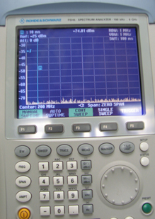

Observe the amplitude of the spike and the star shown in Illustration 8. If the star is present and there are no spikes, the coil is fine.
If any spike greater than -35 dbm occurs, or the star is missing (as shown below), the test failed. The spike must be fixed before returning the system to the customer.
Illustration 10: Spike Events
